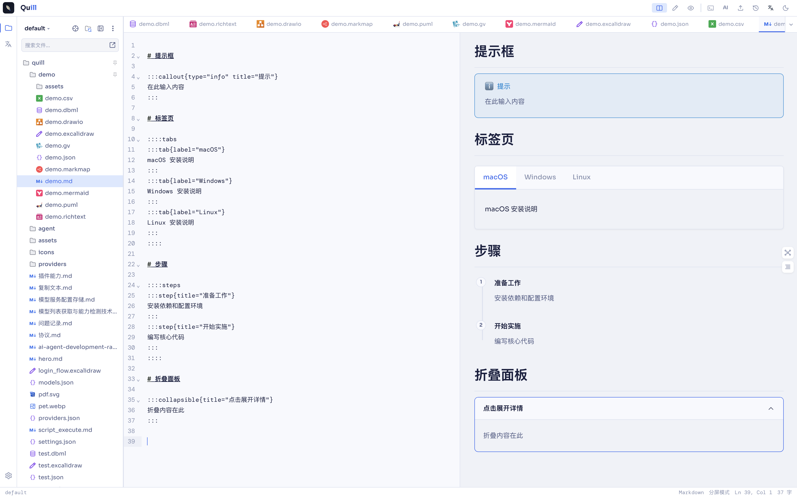
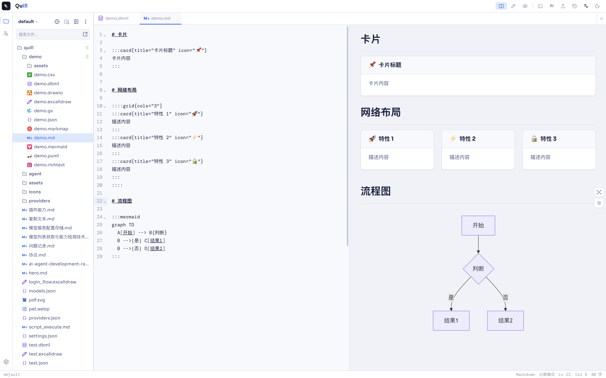
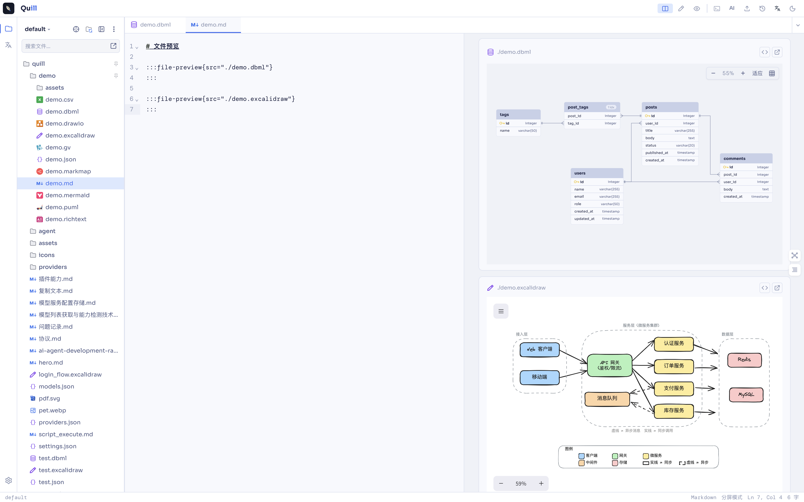

Markdown
支持标准 markdown 语法，并内置一套容器插件，让文档里可以直接嵌入更丰富的结构：
- Button / Callout / Card / Collapsible
- FilePreview / Grid / StatusTag / Steps / Tabs / Timeline
- Graphviz / Mermaid / PlantUml 图表容器
富文本
所见即所得的富文本编辑，适合不需要 markdown 语法、只想直接排版内容的场景。
结构化数据
CSV、JSON 可以直接在 Quill 中打开编辑，无需借助外部表格或代码工具。
思维导图
markmap 用 markdown 语法编写思维导图，写大纲的同时自动生成可视化结构。
建模与制图
- dbml — 编写 ER 图，用于数据库建模
- drawio — 绘制架构图、流程图
- excalidraw — 手绘风格白板
- graphviz — 用 DOT 语言描述图结构
- plantuml / mermaid — 文本驱动的图表绘制
screenshots
效果截图

markdown 容器插件效果

dbml ER 图编辑

excalidraw 手绘白板